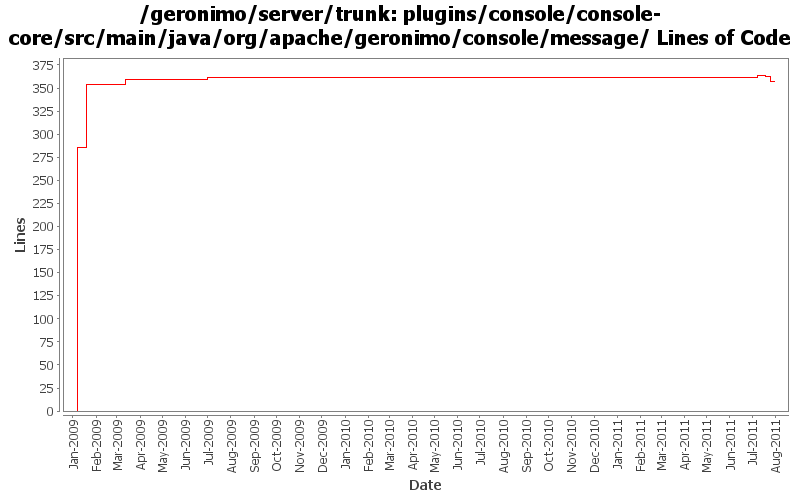

[root]/plugins/console/console-core/src/main/java/org/apache/geronimo/console/message

| Author | Changes | Lines of Code | Lines per Change |
|---|---|---|---|
| Totals | 17 (100.0%) | 382 (100.0%) | 22.4 |
| dwoods | 6 (35.3%) | 354 (92.7%) | 59.0 |
| rwonly | 6 (35.3%) | 10 (2.6%) | 1.6 |
| genspring | 2 (11.8%) | 7 (1.8%) | 3.5 |
| gawor | 2 (11.8%) | 6 (1.6%) | 3.0 |
| xuhaihong | 1 (5.9%) | 5 (1.3%) | 5.0 |
GERONIMO-6059 New look and feel of Geronimo 3.0 admin console (Step 1)
1 lines of code changed in 1 file:
GERONIMO-6094 Some issues of confirm msg tld in admin console
0 lines of code changed in 1 file:
GERONIMO-6080 When shutdown server or uninstall module in browser, could not dispaly the confirm dialog. Patch from Yi Xiao.
0 lines of code changed in 1 file:
GERONIMO-5954 font type and size between abbreviate and detail error messages in portlet are different / I also replace the old ugly msg icons.
9 lines of code changed in 4 files:
GERONIMO-5674 Dojo related improvement. Patch from Xiao Yi to replace the full dojo with a customized dojo.
1, DojoHowToCompress/**/* files are the build script to build geronimo customized dojo.
2, dojo/**/* files are the customized dojo files for geronimo.
3, dojo-tomcat and dojo-jetty modules are removed.
4, customized dojo files are put into console-portal-driver webapp so that other jsp can reference the dojo
files with /console/dojo/xxx
5, also updated all dojo references in all jsps to the new dojo location.
7 lines of code changed in 1 file:
switch back to /dojo - my copy of dojo-release-1.1.1-mini was outdated
1 lines of code changed in 1 file:
fix dojo locations. fixes console prompts. might break console testsuites
5 lines of code changed in 1 file:
GERONIMO-4517 Apply unified message display style(G-4484) to javascript alert messages. Together with the localization of these messages. Thanks for the patch, Gang Yin
5 lines of code changed in 1 file:
GERONIMO-4517 Apply unified message display style(G-4484) to javascript alert messages. Together with the localization of these messages. Applied js-localization-core.patch from Gang Yin.
68 lines of code changed in 1 file:
GERONIMO-4484 Extraction, localization and display of messages generated in portlets. Applied common-message-base.patch and common-message-core.patch from Gang Yin, with some minor updates.
286 lines of code changed in 5 files: